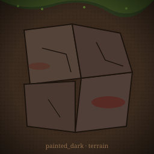
terrain
深棕 + 暗红 + 骨白；强阴影；粗轮廓。适合末世/地牢氛围。

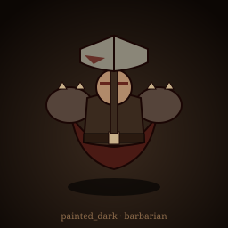
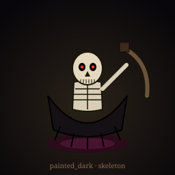
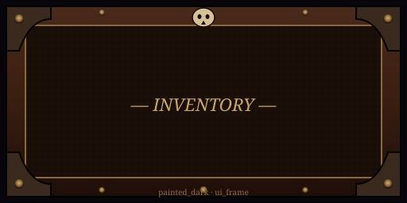
饱和卡通手绘；鲜绿草地 + 金边羊皮卷轴；暖色氛围。
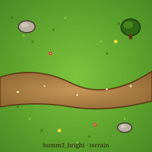
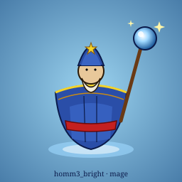
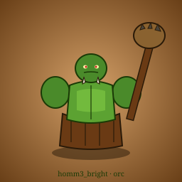
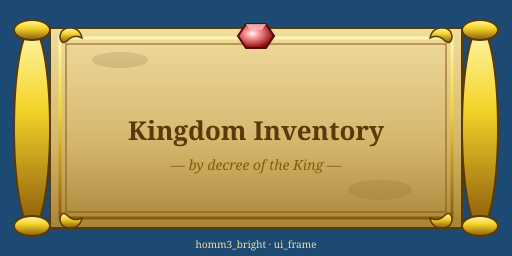
强制像素一致；itch.io/opengameart 海量 CC0 可直接替换。项目已有 LPC 可复用，工作量最小。
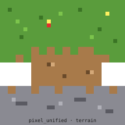
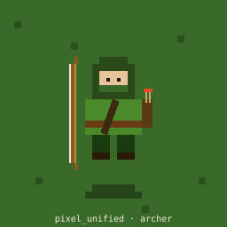
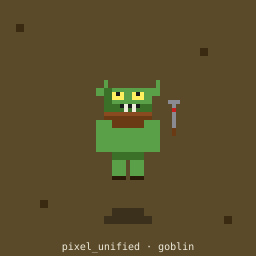
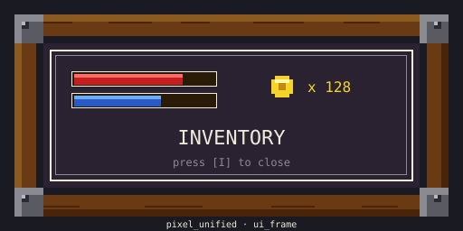
米白宣纸 + 墨色 + 朱红印章；辨识度极强。受众窄，对比度需谨慎。
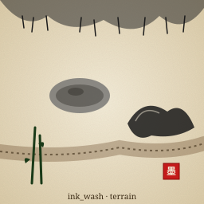
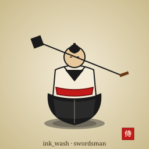
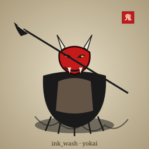
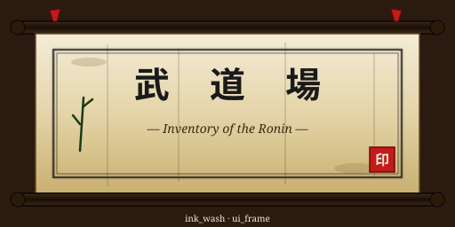
painted_dark / homm3_bright / pixel_unified / ink_wash。选中后我会把对应 SVG 替换成高分辨率 PNG/tileset 并交给 Developer 接入。